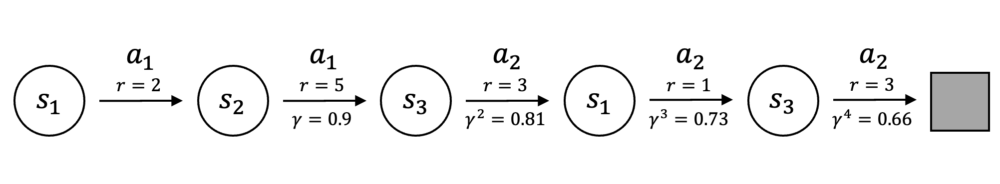

Successor Features
Revised August 28, 2025
The Value Functions and Policies and Policy and Value Iteration Proofs notes are optional but recommended background reading.
Transfer learning refers to leveraging knowledge acquired in a general setting to improve performance on a more specialized task. Formally, let \(\mathcal{O}\) and \(\mathcal{O}'\) be sets of tasks with \(\mathcal{O}’ \subset \mathcal{O}\), and let \(o\) denote a task. Transfer occurs if training on \(\mathcal{O}\) yields performance on \(o\) that is never worse, and sometimes strictly better, than training only on \(\mathcal{O}'\).
When tasks share dynamics but differ in rewards, the expected one-step reward for transition \((s,a)\) admits the parameterization:
\[ \begin{equation}\label{eq:parameterized-reward} R(s,a) = \phi(s,a)^\top \mathbf{w}, \end{equation} \]
where \(\phi(s,a) \in \mathbb{R}^d\) are the features of \((s,a)\) and \(\mathbf{w} \in \mathbb{R}^d\) is a weight vector. This representation is fully general — by choosing \(\phi(s,a)\) as a one-hot indicator vector for the state–action pair \((s,a)\), any reward function can be recovered exactly by setting the corresponding component of \(\mathbf{w}\) to \(R(s,a)\).
This parameterization isolates variation in the reward function. If all other components of the MDP are fixed, the transfer problem reduces to fixing \(\phi\) and allowing any \(\mathbf{w}\) to induce a new MDP:
\[ \begin{equation*} \mathcal{M}^\phi = \{ \mathcal{M}(\mathcal{S}, \mathcal{A}, \mathbf{P}, R, \gamma) \mid R(s,a) = \phi(s,a)^\top \mathbf{w} \} \;. \end{equation*} \]
Solving tasks in \(\mathcal{M}^\phi\) admits a generalization of the policy improvement theorem, called Generalized Policy Improvement, which states that acting greedily with respect to the value function of a policy \(\pi\) under a new reward function yields a policy \(\pi'\) that is no worse than \(\pi\) for that reward function. For a set of policies, acting greedily with respect to the pointwise maximum of their value functions yields a policy no worse than any in the set.
Bounding Transfer Error
Consider a set of reinforcement learning tasks that differ only in their reward functions, each linear in a feature vector \(\boldsymbol\phi(s,a)\) (Equation \(\eqref{eq:parameterized-reward}\)). For a target task \(\mathcal{M}_i\), the suboptimality of a transferred policy \(\pi\) relative to the optimal policy \(\pi_i^*\) can be bounded by separating representation error from transfer error:
\[ \begin{equation*} Q_i^*(s,a) - Q_i^\pi(s,a) = \color{red}{\max_j Q_i^{\pi_j^*}(s,a) - Q_i^\pi(s,a)} + \color{blue}{Q_i^*(s,a) - \max_j Q_i^{\pi_j^*}(s,a)} \;. \end{equation*} \]
The representation gap (in blue) measures the suboptimality of the best available source policy in the target task while the transfer gap (in red) measures the additional loss incurred when combining source policies.
Bounding the Transfer Gap
The Transfer Gap is bounded using Generalized Policy Improvement (GPI). A GPI policy is constructed from a set of value function approximations \(\{\hat Q_i^{\pi_j^*}\}\), where \(\hat Q_i^{\pi_j^*}\) approximates the value of a source policy \(\pi_j^*\) in the target task \(\mathcal{M}_i\) and satisfies a uniform error bound \(\lvert Q_i^{\pi_j^*}(s,a)-\hat Q_i^{\pi_j^*}(s,a)\rvert \le \epsilon\). The policy acts greedily with respect to the maximum of these approximations:
\[ \begin{equation*} \pi(s) \in \arg\max_a \max_j \hat Q_i^{\pi_j^*}(s,a) \;. \end{equation*} \]
Let \(Q_{\max}(s,a)=\max_j Q_i^{\pi_j^*}(s,a)\) and \(\hat Q_{\max}(s,a)=\max_j \hat Q_i^{\pi_j^*}(s,a)\). Define the Bellman operator for policy \(\pi\) in the target task as \((T_i^\pi Q)(s,a)=R_i(s,a)+\gamma \mathbb E_{s’}[Q(s’,\pi(s’))]\). Applying \(T_i^\pi\) to \(\hat Q_{\max}\) gives:
\[ \begin{align} (T_i^\pi \hat Q_{\max})(s,a) &= R_i(s,a) + \gamma\,\mathbb E_{s’}[\max_b \hat Q_{\max}(s’,b)] && \text{definition of }\pi \nonumber \\ &\ge R_i(s,a) + \gamma\,\mathbb E_{s’}[\hat Q_i^{\pi_j^*}(s’, \pi_j^*(s’))] && \text{for any } j \nonumber \\ &\ge R_i(s,a) + \gamma\,\mathbb E_{s’}[Q_i^{\pi_j^*}(s’, \pi_j^*(s’))] - \gamma\epsilon && \text{uniform error bound} \nonumber \\ &= Q_i^{\pi_j^*}(s,a) - \gamma\epsilon && \text{since } Q_i^{\pi_j^*} \text{ is the fixed point of } T_i^{\pi_j^*} \nonumber \\ &\ge \max_j Q_i^{\pi_j^*}(s,a) - \gamma\epsilon && \text{since inequality holds for all } j \nonumber \\ &\ge \hat Q_{\max}(s,a) - (1+\gamma)\epsilon && \text{since }\hat Q_{\max}\ge \max_j Q_i^{\pi_j^*} - \epsilon . \label{eq:bellman-application} \end{align} \]
Since \(T_i^\pi\) is a \(\gamma\)-contraction, iterative application of the inequality in Equation \(\eqref{eq:bellman-application}\) gives:
\[ \begin{align*} (T_i^\pi)^k \hat Q_{\max}(s,a) &\ge \hat Q_{\max}(s,a) - \Big(\sum_{t=0}^{k-1}\gamma^t\Big)(1+\gamma)\epsilon \\ &= \hat Q_{\max}(s,a) - \frac{1-\gamma^k}{1-\gamma}(1+\gamma)\epsilon . \end{align*} \]
Taking the limit as \(k \to \infty\) yields:
\[ \begin{align*} Q_i^\pi(s,a) &\ge \hat Q_{\max}(s,a) - \frac{1+\gamma}{1-\gamma}\epsilon \\ &\ge (Q_{\max}(s,a) - \epsilon) - \frac{1+\gamma}{1-\gamma}\epsilon && \text{by the uniform error bound} \\ &= Q_{\max}(s,a) - \left(\frac{1+\gamma}{1-\gamma}\epsilon + \epsilon\right) \\ &= Q_{\max}(s,a) - \left(\frac{1+\gamma}{1-\gamma} + 1\right)\epsilon \\ &= Q_{\max}(s,a) - \left(\frac{1+\gamma}{1-\gamma} + \frac{1-\gamma}{1-\gamma} \right)\epsilon \\ &= Q_{\max}(s,a) - \left(\frac{(1+\gamma) + (1-\gamma)}{1-\gamma} \right) \epsilon \\ &= Q_{\max}(s,a) - \frac{2\epsilon}{1-\gamma} \\ &= \max_j Q_i^{\pi_j^*}(s,a) - \frac{2\epsilon}{1-\gamma} \;. \end{align*} \]
Rearranging this inequality bounds the transfer gap:
\[ \begin{equation}\label{eq:transfer-bound} \max_j Q_i^{\pi_j^*}(s,a) - Q_i^\pi(s,a) \le \color{red}{\frac{2\epsilon}{1-\gamma}} \;. \end{equation} \]
Bounding the Representation Gap
The representation gap is bounded by analyzing the effect of reward function perturbations on value functions. Let \(\delta_{ij}=\max_{s,a}\lvert R_i(s,a)-R_j(s,a)\rvert\) be the maximum reward difference between tasks \(i\) and \(j\). For any policy \(\pi\), the difference between its value functions in tasks \(i\) and \(j\) is bounded:
\[ \begin{equation*} \lVert Q_i^\pi - Q_j^\pi \rVert_\infty \le \frac{\delta_{ij}}{1-\gamma} \;, \end{equation*} \]
which follows from the contraction mapping theorem applied to the Bellman operators \(T_i^\pi\) and \(T_j^\pi\).
The same logic extends to the optimal value functions:
\[ \begin{equation*} \lVert Q_i^* - Q_j^* \rVert_\infty \le \frac{\delta_{ij}}{1-\gamma} . \end{equation*} \]
The suboptimality of a source policy \(\pi_j^*\) in the target task \(i\) is then bounded by combining these results:
\[ \begin{align*} Q_i^*(s,a) - Q_i^{\pi_j^*}(s,a) &= \big(Q_i^*(s,a) - Q_j^*(s,a)\big) + \big(Q_j^{\pi_j^*}(s,a) - Q_i^{\pi_j^*}(s,a)\big) \\ &\le \frac{\delta_{ij}}{1-\gamma} + \frac{\delta_{ij}}{1-\gamma} = \frac{2\delta_{ij}}{1-\gamma} . \end{align*} \]
The representation gap is determined by the best-performing source policy in the target task:
\[ \begin{equation}\label{eq:representation-bound} Q_i^*(s,a) - \max_j Q_i^{\pi_j^*}(s,a) = \min_j \big(Q_i^*(s,a) - Q_i^{\pi_j^*}(s,a)\big) \le \color{blue}{\min_j \frac{2\delta_{ij}}{1-\gamma}} \;. \end{equation} \]
Transfer Performance Guarantee
Combining the bounds on the representation gap (Equation \(\eqref{eq:representation-bound}\)) and the transfer gap (Equation \(\eqref{eq:transfer-bound}\)) yields the complete performance guarantee:
\[ \begin{align*} Q_i^*(s,a) - Q_i^\pi(s,a) & = \color{red}{ \left(\max_j Q_i^{\pi_j^*}(s,a) - Q_i^\pi(s,a)\right) } + \color{blue}{ \left(Q_i^*(s,a) - \max_j Q_i^{\pi_j^*}(s,a)\right) }\\ &\le \color{red}{ \frac{2\epsilon}{1-\gamma} } + \color{blue}{ \frac{2}{1-\gamma}\min_j \delta_{ij} } \\ &= \frac{2}{1-\gamma}\left(\min_j \delta_{ij} + \epsilon\right). \end{align*} \]
Under the assumption of linear rewards, \(R_k(s,a)=\phi(s,a)^\top \boldsymbol w_k\), the reward difference \(\delta_{ij}\) is bounded by the Cauchy-Schwarz inequality:
\[ \begin{equation*} \delta_{ij} = \max_{s,a}\lvert \phi(s,a)^\top(\boldsymbol w_i-\boldsymbol w_j)\rvert \le \phi_{\max}\lVert \boldsymbol w_i - \boldsymbol w_j \rVert \;, \end{equation*} \]
where \(\phi_{\max}=\max_{s,a}\lVert \phi(s,a)\rVert\).
Substituting this bound for \(\delta_{ij}\) yields:
\[ \begin{equation}\label{eq:final-guarantee} Q_i^*(s,a) - Q_i^\pi(s,a) \le \frac{2}{1-\gamma}\Big(\phi_{\max}\min_j \lVert \boldsymbol w_i - \boldsymbol w_j\rVert + \epsilon\Big) . \end{equation} \]
Successor Features
Equation \(\eqref{eq:final-guarantee}\) guarantees that GPI transfer to a new task \(\mathcal{M}_{n+1}\) with performance bounded by the distance to the closest source task in reward-parameter space and by the uniform error of the value function approximations. Direct application of GPI, however, requires computation of each \(\pi_1^*, \pi_2^*, \dots, \pi_n^*\). Efficient transfer therefore depends on a representation that allows action values to be estimated without explicitly solving for every source policy. Successor Features provide such a representation.
With feature basis \(\phi\), the Q-function decomposes as:
\[ \begin{align} Q_\pi(s,a) &= \mathbb{E}_\pi \Bigg[ \sum_{k=0}^{\infty} \gamma^k R_{k+1} \,\Big|\, s_0=s, a_0=a \Bigg] \nonumber \\ &= \mathbb{E}_\pi \Bigg[ \sum_{k=0}^{\infty} \gamma^k \phi(s_k,a_k)^\top \mathbf{w} \,\Big|\, s_0=s, a_0=a \Bigg] \nonumber \\ &= \mathbb{E}_\pi \Bigg[ \sum_{k=0}^{\infty} \gamma^k \phi(s_k,a_k) \,\Big|\, s_0=s, a_0=a \Bigg]^\top \mathbf{w} \nonumber \\ &= \psi^\pi(s,a)^\top \mathbf{w} \label{eq:q-with-sf} \;, \end{align} \]
where \(\psi^\pi(s,a)\) are the successor features under \(\pi\) starting from \((s,a)\). If \(\mathcal{S}\) and \(\mathcal{A}\) are finite and small, and \(\phi\) is defined as a one-hot encoding of \(\mathcal{S}\times\mathcal{A}\), then \(\mathbf{w}\in\mathbb{R}^{\lvert\mathcal{S}\rvert \times \lvert\mathcal{A}\rvert}\) is a vector representation of the reward function and \(\psi^\pi(s,a)\) is the discounted count, under \(\pi\), of visits to each state–action pair.
For the below trajectory:
|  |
with a one-hot feature representation, each state–action pair corresponds to a canonical basis vector in \(\mathbb{R}^6\). For example, using the lexicographic order \((s_1,a_1),(s_1,a_2),(s_2,a_1),(s_2,a_2),(s_3,a_1),(s_3,a_2)\):
\[ \begin{align*} \boldsymbol\phi(s_1,a_1) &= [1,0,0,0,0,0]^\top \\ \boldsymbol\phi(s_2,a_1) &= [0,0,1,0,0,0]^\top \;. \end{align*} \]
SFs compute the value function via the inner product in Equation \(\eqref{eq:q-with-sf}\):
\[ \begin{align*} \boldsymbol\psi^\pi(s_1,a_1) &= [1, 0.73, 0.9, 0, 0, 1.47]^\top, \\ \mathbf{w} &= [2, 1, 5, 0, 0, 3]^\top, \\ Q_\pi(s_1,a_1) &= \boldsymbol\psi^\pi(s_1,a_1)^\top \mathbf{w} = 11.64 \;. \end{align*} \]
This makes explicit that \(Q_\pi\) decomposes into \(\mathbf{w}\), which depends only on rewards, and the discounted feature sequence \(\psi^\pi\), which depends only on the dynamics and policy.
SFs Using Function Approximation
In the tabular case \(\phi\) encoded each state–action pair as a one-hot vector and \(\mathbf{w}\) represented the full reward function. In large state or action spaces explicit representations are infeasible, and one or both components must be estimated.
Learning a Reward Model
The reward model \(\mathbf{w}\) can be estimated with supervised regression by minimizing the squared error:
\[ \begin{equation*} L^\text{w}(\hat{\mathbf{w}}) = \mathbb{E}_{s,a}\Big[\big(\phi(s,a)^\top \hat{\mathbf{w}} - R(s,a)\big)^2\Big] \;, \end{equation*} \]
where the expectation is taken with respect to a visitation distribution over state–action pairs.
Learning a SF Model
Because \(\psi^\pi\) is the expected discounted sum of \(\phi\) under \(\pi\), it satisfies a Bellman equation with \(\phi\) as the immediate reward proxy:
\[ \begin{equation*} \psi^\pi(s,a) = \phi(s,a) + \gamma \,\mathbb{E}\big[\psi^\pi(s’,\pi(s’)) \mid s,a\big] . \end{equation*} \]
Any RL algorithm can therefore be applied to compute \(\psi^\pi\). For example, parameterizing \(\psi^\pi\) with \(\theta\) yields a temporal-difference loss analogous to that used in deep Q-learning:
\[ \begin{align*} Y &= \phi(s,a) + \gamma \,\hat{\psi}^\pi(s’,\pi(s’);\theta) \nonumber \\ L^{SF}(\hat{\psi}^\pi_{\theta}) &= \mathbb{E}_{s,a}\Big[\big(Y - \hat{\psi}^\pi(s,a;\theta)\big)^2\Big] \;. \end{align*} \]
As in deep Q-learning, stability is improved by introducing a target network. The loss then becomes:
\[ \begin{equation*} L^{SF}(\hat{\psi}^\pi_\theta) = \mathbb{E}\Big[\big(\phi(s,a) + \gamma \hat{\psi}^\pi(s’,\pi(s’);\theta^-) - \hat{\psi}^\pi(s,a;\theta)\big)^2\Big] \;, \end{equation*} \]
where \(\theta^-\) are the parameters of a target network held fixed during updates and periodically synchronized with \(\theta\).
Parameters \(\theta\) are updated to minimize \(L^{SF}\) with semi-gradient descent:
\[ \begin{align*} \Delta \theta &= -\alpha \nabla_{\theta} L^{SF} \\ &= \alpha \Big[Y - \hat{\psi}^\pi(s,a;\theta)\Big] \nabla_{\theta}\hat{\psi}^\pi(s,a;\theta) && \text{by the chain rule.} \end{align*} \]
Learning \(\phi\)
A feature map \(\phi\) satisfying Equation \(\eqref{eq:parameterized-reward}\) can be estimated through multi-task regression. Let \(\hat{\mathcal{M}} = \{M_1,\dots,M_D\} \subset \mathcal{M}^\phi\) denote base tasks with reward functions \(R_i\). For each task the approximation problem is defined as:
\[ \begin{equation*} \hat{\phi}(s,a)^\top \hat{\mathbf{w}}_i \approx R_i(s,a), \qquad i=1,\dots,D . \end{equation*} \]
Alternatives include constructing features with autoencoders or embedding their estimation in networks that simultaneously learn successor features.
 |
Consider the reacher environment, where the objective is to position the end effector of a two-joint robotic arm at a target. The state space is \(\mathcal{S}\subset\mathbb{R}^4\), comprising the joint angles and angular velocities. The action space is \(\mathcal{A}=\{-1,0,1\}^2\), giving nine discrete actions. The reward at each step is \(1-\delta\), where \(\delta\) is the Euclidean distance between the end effector and the target.
In this setting the feature vector \(\phi\in\mathbb{R}^n\) is given (i.e., not learned), with components equal to \(1-\delta\) for a fixed set of \(n\) candidate target locations. For example, with twelve targets, four may be designated for training and eight for testing, yielding \(\phi\in\mathbb{R}^{12}\). A DQN parameterized by \(\theta\) produces an output matrix \(\hat{\Psi}\in\mathbb{R}^{9\times 12}\) in which the \(a^\text{th}\) row approximates \(\psi^\pi(s,a)\) for \(a\in\mathcal{A}\). For a given task \(t\), let \(\mathbf{w}_t\in\mathbb{R}^{12}\) denote the corresponding one-hot vector. As in the finite case, \(\mathbf{w}_t\) is specified rather than learned. The value for action \(a\) is then given by \(\hat\psi(s,a)^\top \mathbf{w}_t\).
Limitations
The linear reward parameterization in Equation \(\eqref{eq:parameterized-reward}\) restricts the class of environments that can be represented. When reward functions deviate from this structure the learned features fail to generalize and transfer performance degrades. Even when rewards are linear, transfer is limited because successor features are coupled to the policies under which they are learned. In a new MDP with shared dynamics, previously learned successor features \({\psi^{\pi_j}}\) can be reused to compute value functions under the new reward and, via GPI, to construct a zero-shot policy with a transfer performance guarantee. However, this policy is constrained by the source policies \({\pi_j}\): improving beyond the best GPI policy typically requires further learning and adapting the successor features toward the optimal policy in the new environment. SFs can also suffer from scalability issues — a distinct set of successor features must be maintained for each task, so the representation grows linearly with the number of tasks.
Continuous action spaces present the sharpest limitation. In discrete \(\mathcal{A}\) the greedy policy is obtained by evaluating:
\[ \begin{equation*} a^*(s) = \arg\max_{b \in \mathcal{A}} Q(s,b) \end{equation*} \]
once \(Q(s,a)=\psi^\pi(s,a)^\top \mathbf{w}\) is known. In continuous \(\mathcal{A}\) the greedy step requires solving:
\[ \begin{equation*} a^*(s) = \arg\max_{a \in \mathcal{A}} \psi^\pi(s,a)^\top \mathbf{w} \;, \end{equation*} \]
a non-convex optimization at each decision point, which prevents direct recovery of a policy from the successor feature representation.
References
- Advantages and Limitations of using Successor Features for Transfer in Reinforcement Learning, International Conference on Machine Learning (2017)
Lucas Lehnert, Stefanie Tellex, and Michael L Littman
- Successor features for transfer in reinforcement learning, Advances in neural information processing systems (2017)
André Barreto, Will Dabney, Rémi Munos, Jonathan J Hunt, Tom Schaul, Hado P van Hasselt, and David Silver
- Probabilistic Successor Features Allow for Flexible Behaviour International Conference on Learning Representations (2020)
Jesse P. Geerts, Neil Burgess, and Kimberly L. Stachenfeld
- Transfer in Deep Reinforcement Learning Using Successor Features and Generalised Policy Improvement, International Conference on Machine Learning (2018)
André Barreto, Diana Borsa, John Quan, Tom Schaul, David Silver, Matteo Hessel, Daniel Mankowitz, Augustin Žídek, and Rémi Munos